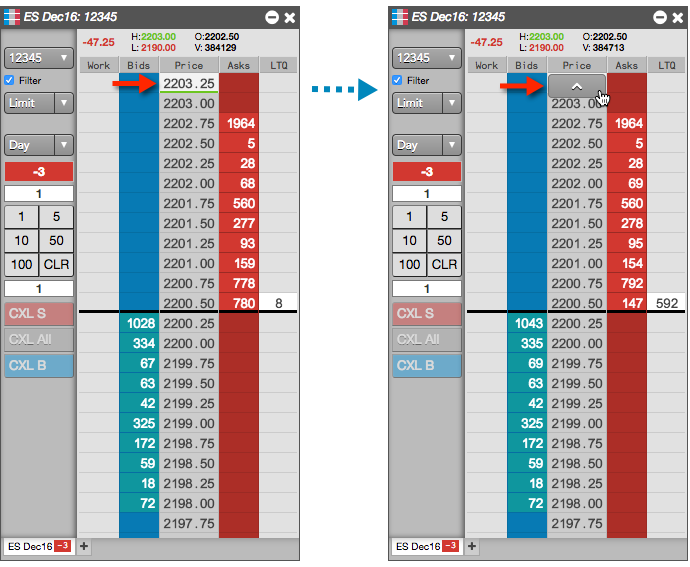
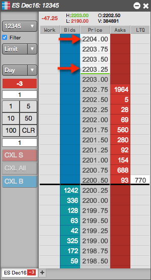

In MD Trader, you can quickly adjust the price ladder up or down with the mouse.
To adjust the price ladder:
- Hover over the top (or bottom) price cell in the price ladder to display the arrow button.

- Click the arrow to move the price ladder one price level at a time (e.g., from 2203.25 to 2204.00).
Tip: Holding down the left mouse button scrolls the ladder continuously.
